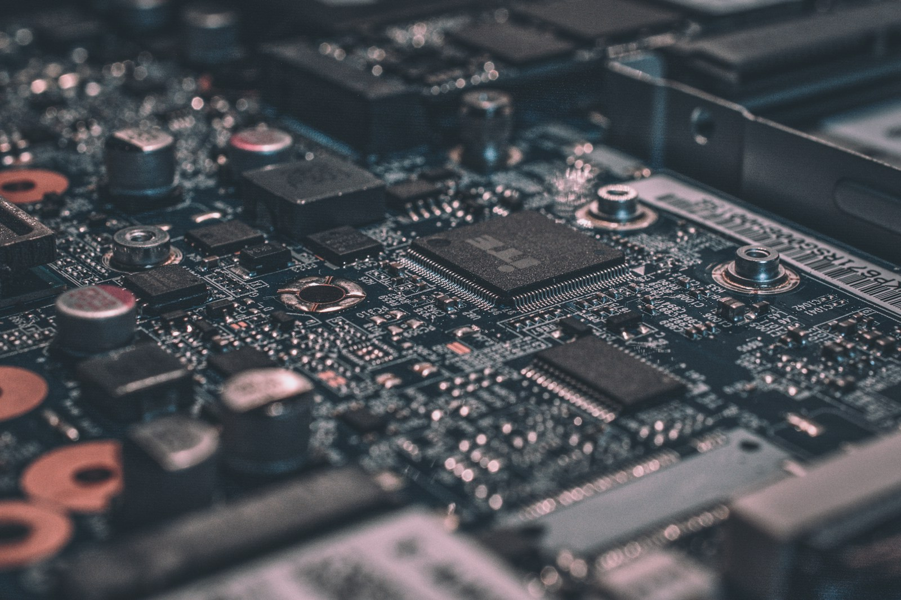

EMBEDDED SYSTEMS SHANGHAI / 2026
把代码写进
真实世界.
嵌入式开发的个人实验室。这里有我做过的项目、踩过的坑，以及每一次把想法变成实物的过程。
01+项目档案
STM32当前主线
∞持续迭代

LAB CAM / 001BOARD LEVEL
+
MCUCORESIGNAL
READY
HARDWARE / FIRMWARE / FIELD NOTES31°13′ N / 121°28′ E
PROJECTS · EXPERIMENTS · NOTES
STM32✳BARE METAL✳RTOS✳CAN BUS✳USB✳HARDWARE DEBUG✳STM32✳BARE METAL✳RTOS✳CAN BUS✳USB✳HARDWARE DEBUG
01 / AREAS OF INTEREST
我的技术频谱.
从寄存器到系统，从代码到信号。
正在学习，也持续动手验证。
MOVE YOUR POINTER TO EXPLORELEIBOX · GRADIENT COVER WALL
BUILD / TEST / REPEAT从实验台开始，
查看项目 →
03 / FIELD NOTES从实验台开始，
把项目做完整。
查看项目 →LEARN / DOCUMENT / SHARE把学会的东西，
打开学习日志 →